Startr — Roster Automation
1Situation
Every training cycle, the Manpower Planning (MPP) team built the monthly training roster by hand in Excel — colour-coding each trainer, course and shift manually across a dense grid. It worked, but it was slow: roughly two full days of manual entry each time, with plenty of room for error along the way.
2Challenge
This wasn't my own team's process — I noticed a colleague's team losing two days a cycle to it and decided to fix it anyway. Drawing on a background in Computer Information Systems, I taught myself advanced Excel VBA from published textbooks and built Startr — a purpose-built automation tool that generates the monthly training demand roster directly from the underlying data, with built-in filtering by date and course. I later added a third-trainer capability in version 1.9 as the team's needs grew.
3Result
Startr cut roster creation from two days to about ten minutes — confirmed by the receiving manager, not self-reported. It has continued to save the MPP team hours every cycle since.
“The new roster creation has saved manhours for the MPP team and aligned the roster to TMS.” — Performance review, 2018–19


Axonify LMS & E-Learning
1Situation
This 26,000-employee healthcare organisation had no learning management system and no structured way to deliver or track training — including lab and clinical staff who needed regulated compliance training in fire safety and infection control, tailored to a laboratory environment rather than generic workplace content.
2Challenge
Stand up a new LMS platform (Axonify) and populate it with functioning, genuinely useful e-learning content — not just a system that technically worked, but courses staff could actually learn from.
3Action
Collaborated as part of the core project team on the Axonify implementation — vendor coordination, system configuration, and organisation-wide rollout, alongside the Biz group and the L&D Assistant Manager. Designed and developed the e-learning content that populated the platform: a 15-lesson Fire Safety course covering fundamentals through evacuation procedures (including inclusive evacuation for reduced-mobility staff) and Fire Warden roles, an Infection Control course adapted for lab-specific requirements (N95 fit-testing, TB lab protocols, PPE selection), a Sample Transport Tracker module, and the QDMS Corrective and Preventive Action (CAPA) module shown below. Personally packaged every course as SCORM 1.2 out of Articulate Storyline and administered the Axonify uploads directly. Designed and distributed the annual learning calendar communication, and built 3 Power BI dashboards covering 5 report types — participation, topic progress, knowledge summary, certification, and user summary.
4Result
Two production-ready compliance courses and a working LMS rollout, with self-managed content publishing end to end — design, SCORM packaging, and platform administration all handled directly, not routed through IT.


Seat Demo Project — Paper to Digital
1Situation
In the cabin crew training room, seat and suite specification information — seat pitch, IFE system, configuration, features — was presented on printed cards mounted on a stand next to each seat mock-up. Updating them meant reprinting, and the format didn't scale well as more seat variants were added.
2Challenge
Move the seat and suite information from paper-based to an electronic, interactive format — working with Training Specialist colleagues from the Service Planning and Operations team to align on what the new version needed to show and how it would be used in the room.
3Action
Worked with the Training Manager and a Training Specialist colleague to map out five options for the room, ranging from a no-cost QR-code addition to the existing stand through to a fully interactive tablet-per-seat installation — weighing cost against interactivity and the practical constraint that learners had no internet access in the room. Prepared work samples for review at the planning meeting, identified new photography requirements, and researched tablet and display hardware options. Redesigned the reference format itself — moving from a plain text spec sheet to a labelled diagram format with callouts pointing directly at seat features, so crew could see what each feature was, not just read a description of it.
4Result
A clearer, more visual reference format ready for electronic display, developed collaboratively with the Service Planning and Operations team as part of the room's wider move toward interactive, tablet-based reference material.


Economy Class Assessment Matrix
1Situation
The Economy Class assessment matrix — the Continual Assessment Form, Course Competency Assessment Criteria, Economy Class Wine List, and Full Practical Assessment — existed as four separate documents, printed at 25 pages. On top of the length, the file had an access issue affecting intranet and Apple-device users.
2Challenge
Update the crew portal's course overview and assessment criteria, and find a way to bring the four documents together into a single, shorter reference without losing any of the assessment content — while fixing the access problem for the users who couldn't open it.
3Action
Worked with the Products and Services and Performance Management teams to redesign the course overview, creating new concept artwork and reformatting the assessment matrix from 25 down to 11 printed pages for cost efficiency. Identified and resolved the intranet/Apple-device access issue by splitting the file into separate linked versions rather than one large document. Consolidated the Continual Assessment Form, Course Competency Assessment Criteria, Economy Class Wine List, and Full Practical Assessment into the single crew-portal reference shown below.
4Result
A single, working crew-portal reference in place of four separate documents — shorter to print, accessible on every platform crew actually used it on, and easier to keep up to date going forward.

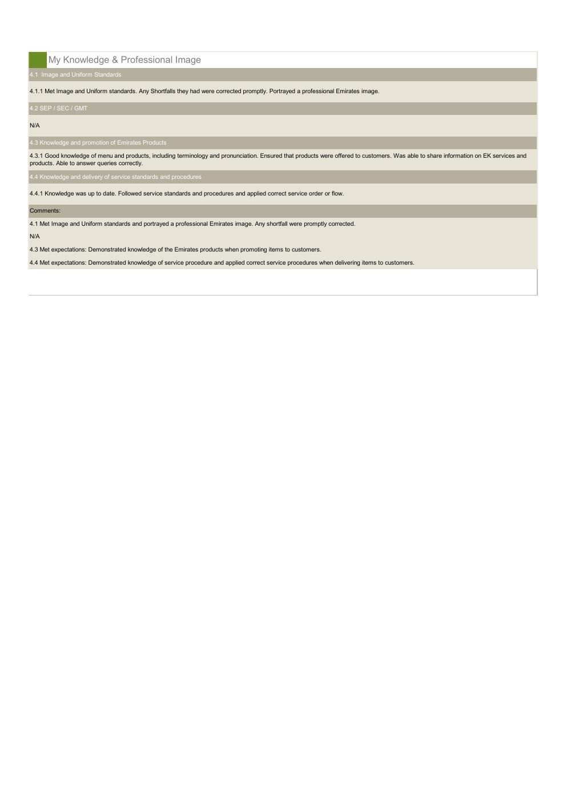
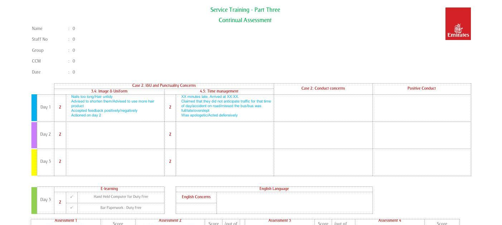
Emirates Cuisine — Interactive Booklet
1Situation
The Emirates Cuisine booklet — a comprehensive culinary reference for cabin crew, covering a pronunciation guide, cooking methods, and food and beverage sections running from hors d’oeuvres through mains, sauces, desserts, cheese, herbs and spices, to beverages — existed only as a static, paper-based document. Over 140 pages long, it was slow to navigate and impractical to search on demand.
2Challenge
Convert the full booklet into an interactive digital format crew could navigate quickly, on an urgent request from the Training Manager.
3Action
Researched interactive PDF techniques and rebuilt the booklet with clickable internal navigation — a linked contents page and a “Back to Contents” link on every section — so crew could jump straight to the section they needed across all 16 sections, rather than scrolling through the full document. Managed the complexity and attention to detail required across the entire document to keep the conversion accurate. Delivered the full conversion in 5 working days.
4Result
Uploaded to the crew portal under Business and First Class prerequisites, and received written commendation from the Training Manager for the turnaround and attention to detail across the full document.
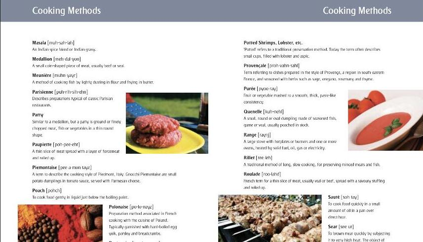
Service Training — Brand Guidelines
1Situation
Training materials and presentations across the Cabin Crew Training team were being produced without a single documented visual standard — fonts, colours, and image choices varied from trainer to trainer and project to project, with no shared reference for what was actually on-brand.
2Challenge
Create a definitive brand guideline for the Service Training team — covering typography, colour, imagery and logo usage — aligned to the wider corporate brand and signed off by Corporate Communications.
3Action
Authored a full “Service Training – Brand Guidelines” document from scratch, covering: the corporate font family across three weights and how to apply it to headlines, subheadings and body copy; exact heading and body point-size rules for PowerPoint slide masters, down to five heading levels; text colour rules specified to exact RGB values for the approved reds, blues and greens; imagery direction — where to source approved stock photography and how to brief a photoshoot, plus detailed guidance on mood, colour saturation, staging and placement for food and lifestyle photography; and logo placement rules for the corporate and campaign brand badges, including precise positioning formulas.
4Result
A single, Corporate Communications-approved reference the wider Cabin Crew Training team could follow to keep every presentation and training material on-brand — replacing ad hoc, inconsistent formatting with one documented standard.
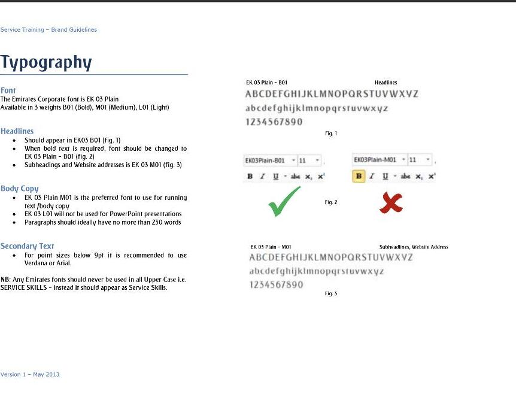
Lamprell — Corporate Identity & Collateral
1Situation
As Corporate Communications Designer at Lamprell in Ras Al Khaimah (Oct 2009 – Aug 2012), the business needed a consistent design voice across every piece of internal and external material it produced — while the company itself was mid-rebrand, transitioning from its earlier identity as Maritime Industrial Services (MIS) to the relaunched Lamprell brand.
2Challenge
Design and maintain corporate identities, brand guidelines and a full range of collateral — signage, brochures, direct mail, newspaper advertisements, postcards, newsletters, flyers, invitations and business cards — consistently across both the outgoing MIS identity and the incoming Lamprell brand, for audiences spanning employees, clients and trade press.
3Action
Designed a working library of collateral across the two identities: multi-page corporate brochures, including the “Lamprell Corporate Profile” and the MIS Tech Services brochure; the company’s internal “News & Views” newsletter; internal campaign artwork such as an IT infrastructure upgrade flyer and IT service-desk posters; desktop wallpapers carrying the new Lamprell identity; and a trade-press advertisement placed in Upstream’s Rigs Focus supplement. Built the same structured, standards-led approach to identity and collateral that was later brought to Emirates training material.
4Result
A working library of on-brand collateral spanning internal comms, print and external trade media — carrying the business through its rebrand from MIS to Lamprell with a consistent visual identity, and placing Lamprell’s profile directly in front of an industry audience via published trade press.
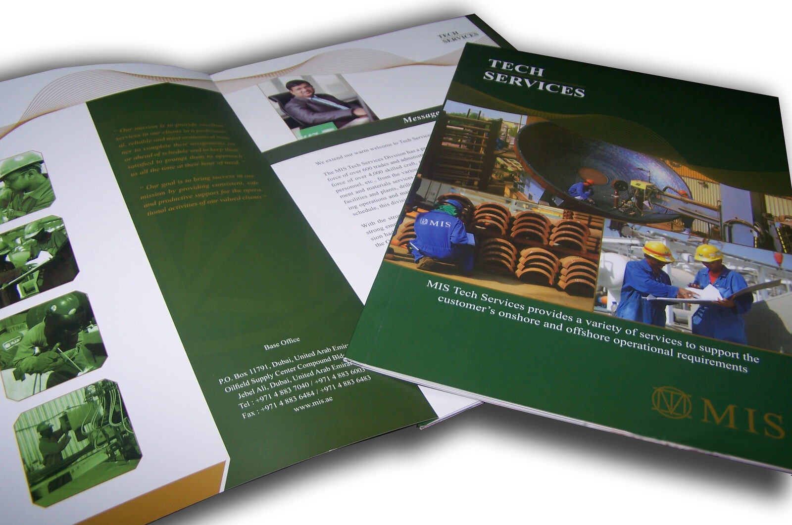
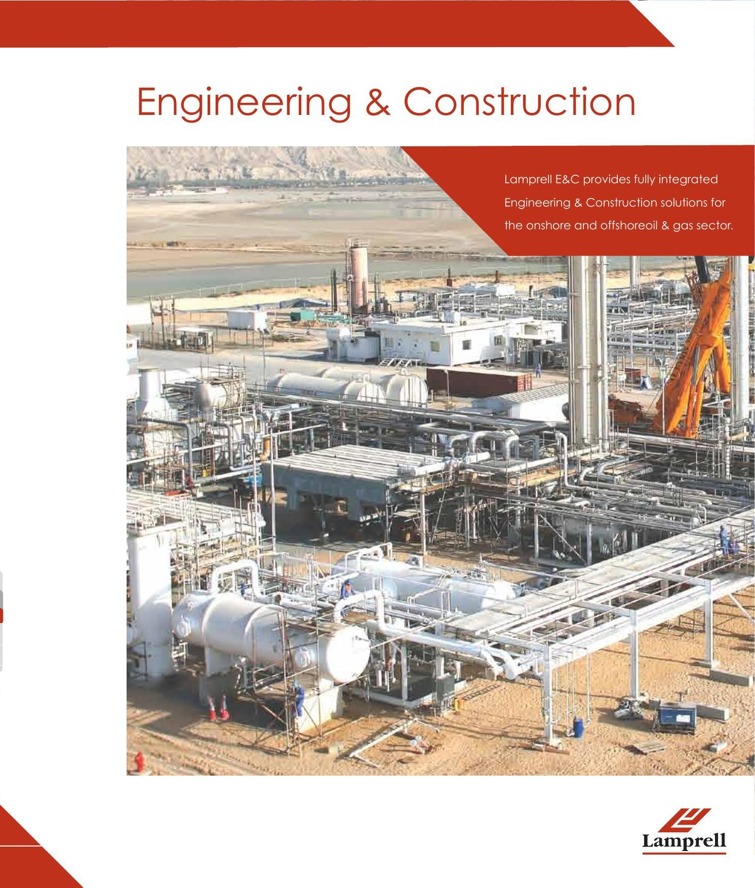
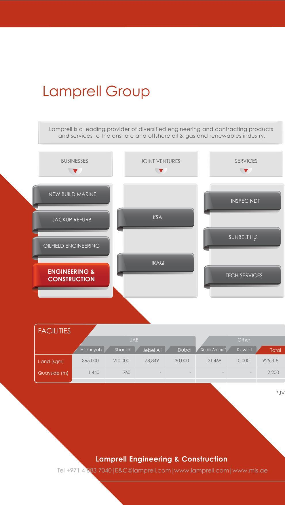
Qatar Airways – Winning Customer Loyalty
View full PDF prototype →1Situation
As a self-directed practice project in 2024, the brief was to design a short cabin crew e-learning course for Qatar Airways on service recovery and problem resolution — and to show the full design process behind it, not just a finished screen or two.
2Challenge
Produce a complete instructional design package end-to-end: a documented gap analysis, learning objectives, a full slide-by-slide storyboard (audio narration, on-screen text, visuals and technical notes for every slide), and a working interactive prototype built to Qatar Airways’ brand identity.
3Action
Ran a gap analysis identifying three current-state-to-desired-state gaps in service recovery — proactively offering alternatives when something’s unavailable, proactively assisting passengers who need extra care rather than waiting to be asked, and handling frustration with empathy and clear communication — and translated each into a learning objective. Authored a full storyboard document mapping every slide’s audio narration, on-screen text, visuals and technical notes for a 10–12 minute course. Built the storyboard out as a 41-slide interactive prototype in Figma: branching scenario questions (unavailable meal options, assisting a mother travelling with an infant, flight delays, special assistance requests) each with tailored feedback per choice, a multi-select knowledge-gap activity with try-again logic on an incorrect attempt, and layered pop-up content for the service-gap breakdown — on-brand throughout.
4Result
A complete, polished instructional design package — documented gap analysis and storyboard through to a working, on-brand interactive prototype — demonstrating the full design process from analysis to build rather than a finished screen alone.
From the storyboard document
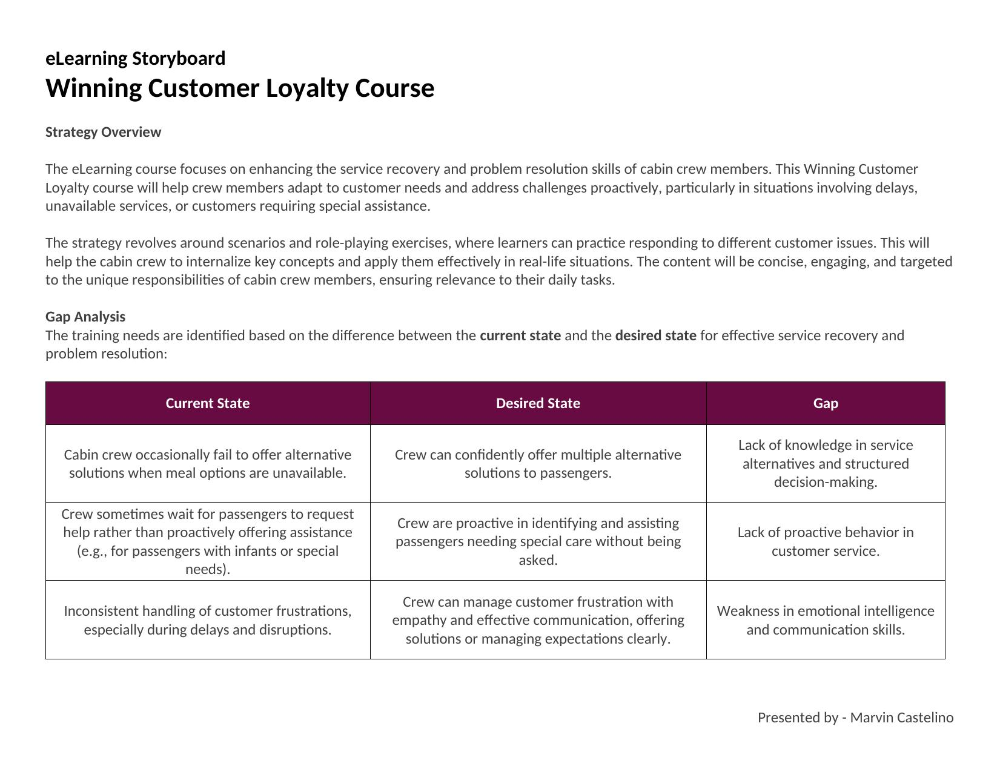
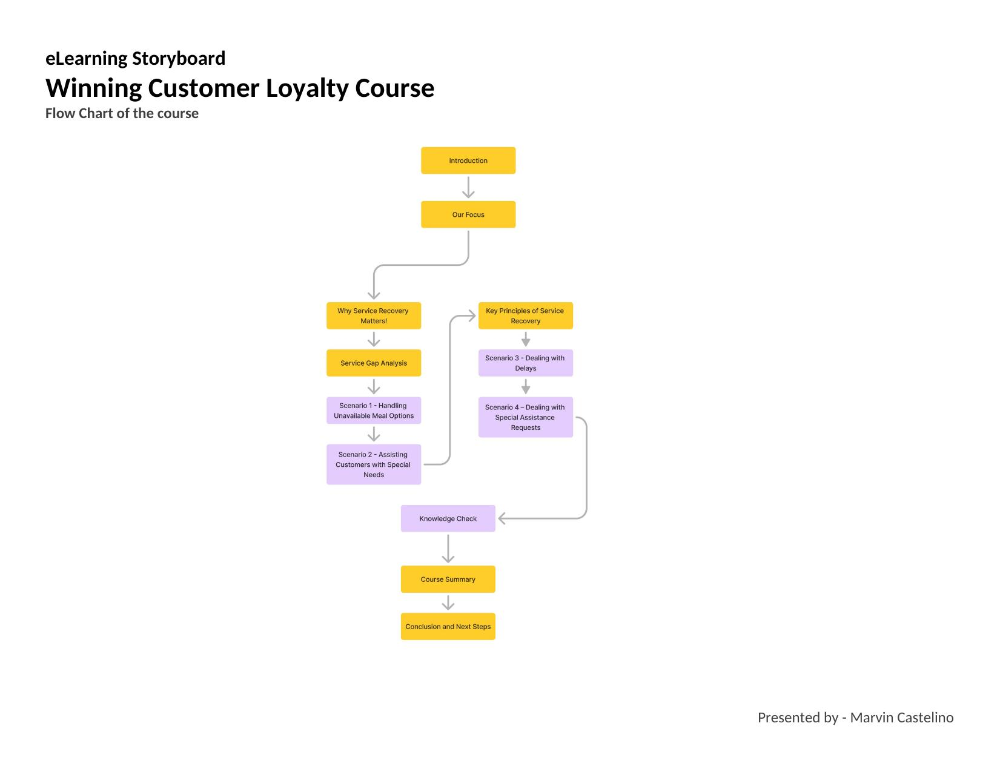
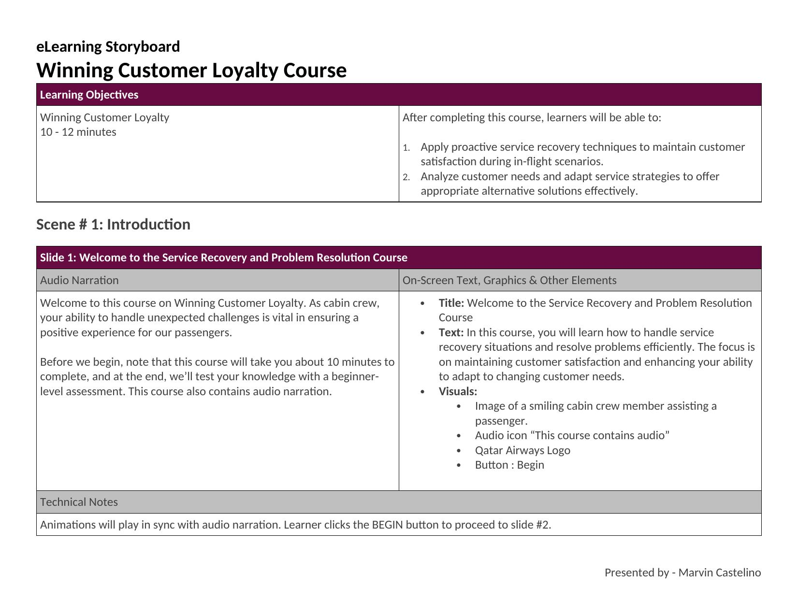
The finished prototype
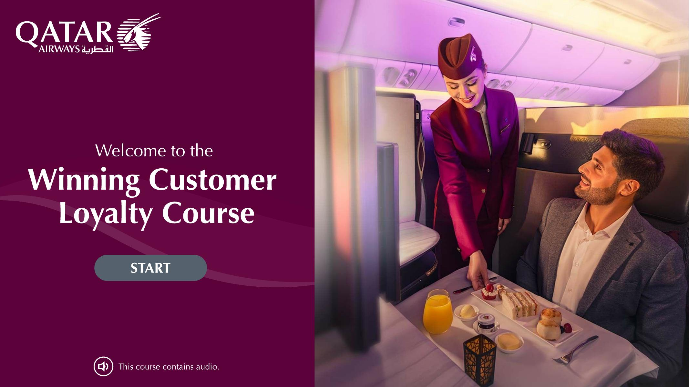
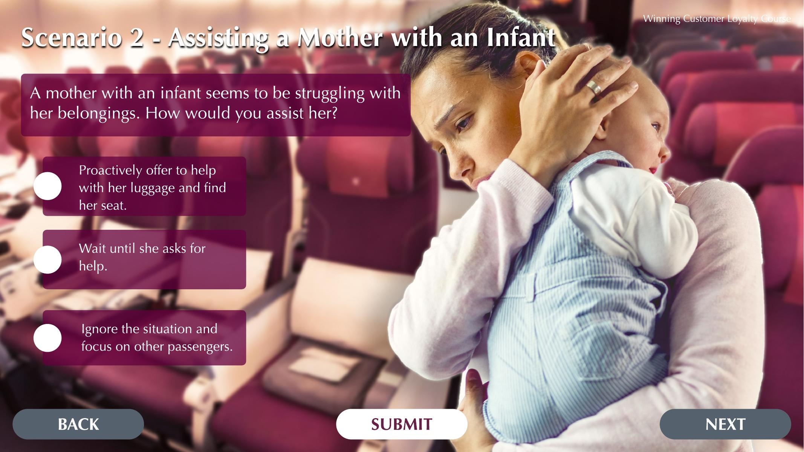
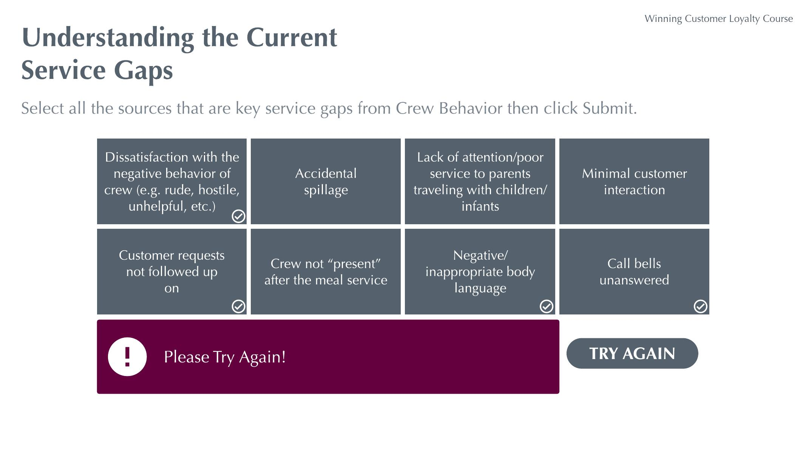